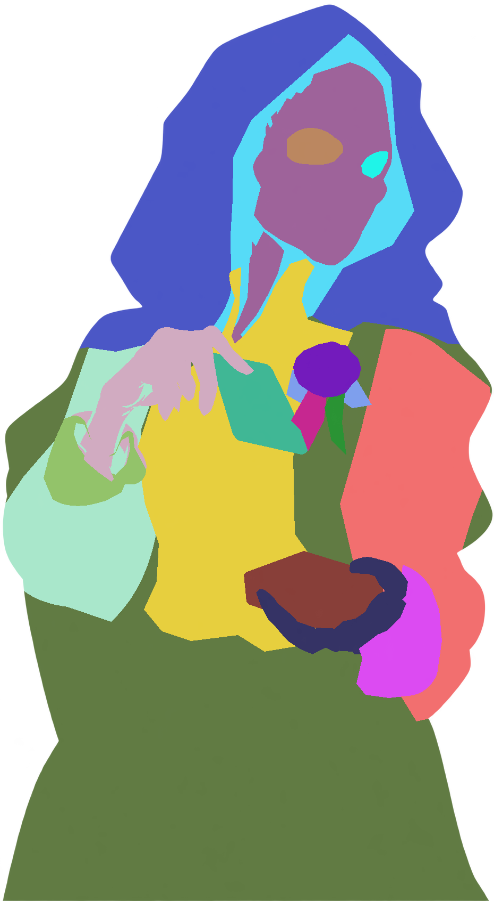

Reaper Dealer · оригинал восстановлен в слоях
930×1691 без увеличения. Поднятая карта, колода, кисти, одежда и силуэт — пиксели исходника. Скрытая дорисовка экспортирована отдельно и выключена в setup.
Проверка сохранённых PNG…
До · оригинал Andrii
Исходный RGBA, 930×1691. Включая исходную прозрачность.
После · композиция из слоёв
Собрано из сохранённых PNG в порядке JSON; сравнение при 100% масштабе, 0 изменённых видимых пикселей.
Мастер нарезкиРезультаты проверкиПредыдущая отклонённая сборкаNOTES
История P2: исходные пивоты. Здесь отображается сохранённый backup до исправлений. Текущие pivots и результаты импорта доступны в
проверке P3.
Setup и смены кистей
Скрытая дорисовка — отдельный просмотр, он не обязан совпадать с полупрозрачным оригиналом. В setup она выключена. Смены кистей взяты из прежних отдельных рисунков; исходную позу они не заменяют. Ключей анимации нет.
Загрузка…
FS и карта разбиения
FS: только цветовой вариант; геометрия и альфа совпадают с BASE. Нарезка совпадает с FS-эталоном.
Каждый видимый пиксель принадлежит ровно одной детали. Эту карту в игру не экспортировать.
Видимые детали · BASE
Скрытые буферы · 32 px · выключены в setup